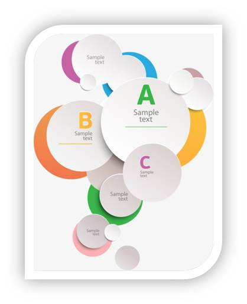

Clasificación del ensayo

Texto
|  |
Expositivo. Presenta las ideas del autor sobre un tema determinado. El ensayista interpreta la idea del autor a tratar, y luego expone sus propias ideas. Es una opinión personal sobre las ideas de un autor sobre el tema tratado. Científico. Es un tipo de ensayo que presenta una investigación con todos los rigores y formalismos de una investigación científica. Debido a esto tiende a confundirse con una monografía. Pero lo que marca la diferencia es que el autor deja su posición, su visión personal sobre el tema. Eso sería un aspecto que lo diferencia de la monografía, en la cual NO se encuentra plasmado el análisis personal del escritor. Se podría afirmar que los ensayos científicos se caracterizan por su aspecto formal objetivo, pero también por su lado subjetivo en el cual se vislumbra el pensamiento del autor del ensayo. Argumentativo. El autor plantea una tesis y la defiende por medio de argumentos para llegar a una conclusión. Literario o poético. Se denomina poético o literario NO relación a su tema, sino al estilo del autor en su redacción. Es decir, es preferente el uso de un lenguaje con fines estéticos. El autor procura exponer de una forma muy íntima sus ideas o sentimientos. El ensayo literario se caracteriza por su subjetividad. |
Audio
| AUDIO - CLASIFICACIÓN |
| . |
 |